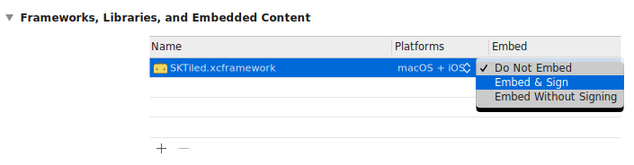

View on GitHub
View on GitHub
 Getting Started Reference
Getting Started Reference
Getting Started
SKTiled was designed to be flexible and easy to use. To get started, simply build the framework and add your assets to your Xcode project. If you have any problems or requests, please open an issue at the Github page.
Requirements
- iOS 12
- tvOS 12
- macOS 10.12
- Xcode 11/Swift 5
Installation
The SKTiled project contains six targets; three are demo applications for iOS/tvOS/macOS. These are included to let you quickly test your own content, or simple play around with the included demo files. The other three are frameworks for use in your own projects. If the three demo targets do not appear in the active scheme list, choose Manage Schemes and press the Autocreate Schemes Now button.

Framework Installation
To use the frameworks, build the appropriate framework target and add to your project. Make sure the Minimum Deployment Target is set correctly for your project (iOS11+/macOS 10.12+/tvOS12+).

After building the framework(s), you’ll need to link them with your project. Select your target, and add the framework to the Frameworks, Libraries and Embedded Content section.
Swift Package Manager
To add the SKTiled framework dependency to your Xcode project, select File > Swift Packages > Add Package Dependency and enter the repository URL. Once the dependency is resolved, you can add it to your targets by clicking the + button in the Frameworks, Libraries and Embedded Content area of the target’s General tab.
Carthage Installation
To build with Carthage, create a Cartfile in your project root and add a reference to SKTiled:
github "mfessenden/SKTiled"
Close the file and run Carthage from the terminal to build the framework(s):
carthage update
To build for a specific platform, use the --platform argument in your build command:
carthage update --platform iOS
Once you’ve run the build command frameworks are built, you’ll find a Carthage directory in the root of your project. The frameworks are located in the Carthage/Build/$PLATFORM_NAME directories, simply install them as described in the framework installation section above.

See the Carthage home page for help and additional build instructions.
Binary Frameworks
It’s also possible to build the new binary xcframework framework for use with multiple platforms/architectures. Pass the --use-xcframeworks argument to the update command:
carthage update --use-xcframeworks
The resulting framework file SKTiled.xcframework can be added to your project via dragging it into the General > Frameworks, Libraries, and Embedded Content section of each target. Unlike normal frameworks, this framework can be used with any platform. If your project will be build for multiple processor architectures (x86, Apple ARM), this is the preferred method.

You’ll need Carthage v0.37.0 to build binary frameworks. See this issue for more information.
CocoaPods Installation
Installation with CocoaPods is similar to Carthage. Create a podfile in your project root with the command:
pod init
Add references to SKTiled in each of your targets:
target 'iOS' do
use_frameworks!
# Pods for iOS
pod 'SKTiled', '~> 1.23'
end
target 'macOS' do
use_frameworks!
# Pods for macOS
pod 'SKTiled', '~> 1.23'
end
target 'tvOS' do
use_frameworks!
# Pods for tvOS
pod 'SKTiled', '~> 1.23'
end
As before, be sure to check the version number. In the terminal, run the installer:
pod install
CocoaPods will create an .xcworkspace file with the name of your project. Open that and use this to compile your targets; dependencies will be linked automatically.
See the CocoaPods home page for help and additional instructions.
Building the Demo Projects
Included are three demo projects which can be compiled and run locally to test your content. To manage code signing for the demo projects, open the Demo.xcconfig file included in the project and replace ${DEVELOPMENT_TEAM} with your own team id:
SAMPLE_CODE_DISAMBIGUATOR = ${DEVELOPMENT_TEAM}
For more information, see the Apple Development Documentation on code signing requirements.
Building the Documentation
To build the documentation, you’ll need to install jazzy. To build the html content, simply run the included script in a shell:
./scripts/build-documentation.sh
tvOS Support

SKTiled can now be built for AppleTV devices, including AppleTV 4K. Currently only tvOS 11+ is supported, although earlier versions might be added in the future.
A Note About 4K

If you are displaying content on a 4K AppleTV, check that your Asset LaunchImage has a 2x resolution of 3840 x 2160. This will ensure that your game runs at a full 4K resolution.
Adding Tiled Assets to Xcode

When adding assets to your Xcode project, files are automatically bundled in your application. To load a bundled tile map, use the SKTilemap.load(tmxFile:) method to read the file:
if let tilemap = SKTilemap.load(tmxFile: "MyTilemap.tmx") {
scene.addChild(tilemap)
}
On your hard drive, the map’s tileset and image should be in the same directory as the map to avoid read errors. Try this instead: SKTilemap.load(:)
Referenced Assets

If you add assets as folder references, you can supply a directory name with the inDirectory argument of SKTilemap.load(tmxFile:) method:
if let tilemap = SKTilemap.load(tmxFile: "MyTilemap.tmx", inDirectory: "Tiled") {
scene.addChild(tilemap)
}
This will allow you more flexibility organizing your project, but be careful that your maps don’t reference files above the referenced folder. For more information, see the Working with Maps section.
Next: Scene Setup - Index